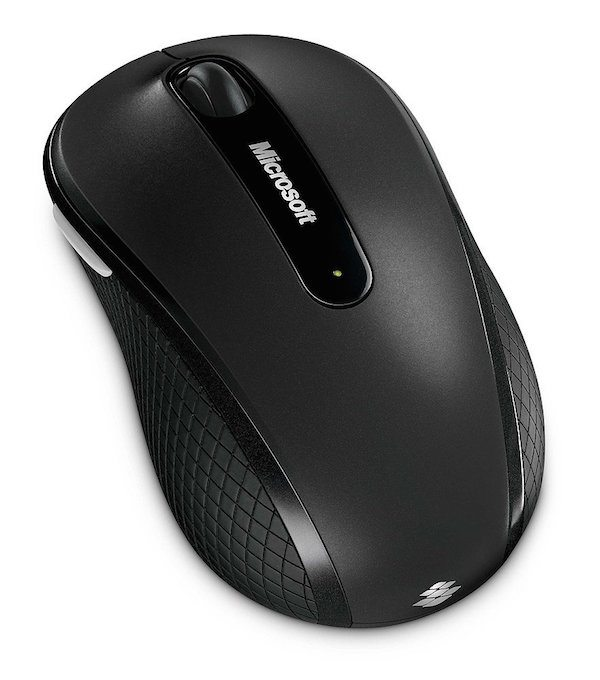
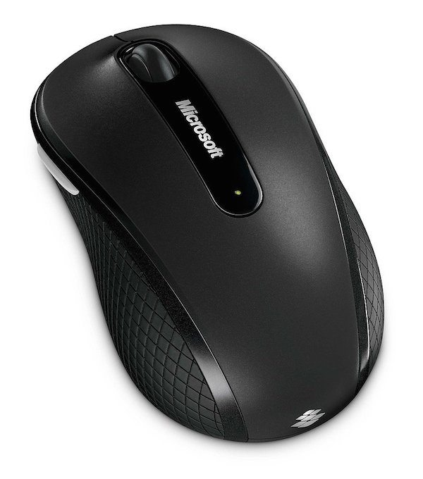

Accessories
Any device added to a computer that performs an additional feature, but is not required. A good example of an accessory is the computer printer, which gives the computer the ability to print, but the computer would still work if it didn't have the printer. Below, is a listing of computer accessories.
- Speakers
- Scanner
- Remote
- Projector
- Printer
- Mouse pad
- Microphone
 

Computers
A computer is a machine that can be instructed to carry out sequences of arithmetic or logical operations automatically via computer programming. Modern computers have the ability to follow generalized sets of operations, called programs. These programs enable computers to perform an extremely wide range of tasks. It has the ability to store, retrieve, and process data.
computers can be classified into two categories:- Computer sizes and Power
- Personal computer types